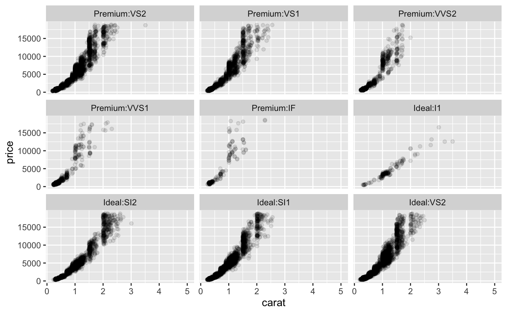

This extension to ggplot2::facet_wrap() will allow you to split
a facetted plot over multiple pages. You define a number of rows and columns
per page as well as the page number to plot, and the function will
automatically only plot the correct panels. Usually this will be put in a
loop to render all pages one by one.
facet_wrap_paginate(
facets,
nrow = NULL,
ncol = NULL,
scales = "fixed",
shrink = TRUE,
labeller = "label_value",
as.table = TRUE,
switch = deprecated(),
drop = TRUE,
dir = "h",
strip.position = "top",
page = 1
)A set of variables or expressions quoted by vars()
and defining faceting groups on the rows or columns dimension.
The variables can be named (the names are passed to labeller).
For compatibility with the classic interface, can also be a
formula or character vector. Use either a one sided formula, ~a + b,
or a character vector, c("a", "b").
Number of rows and columns
Should scales be fixed ("fixed", the default),
free ("free"), or free in one dimension ("free_x",
"free_y")?
If TRUE, will shrink scales to fit output of
statistics, not raw data. If FALSE, will be range of raw data
before statistical summary.
A function that takes one data frame of labels and
returns a list or data frame of character vectors. Each input
column corresponds to one factor. Thus there will be more than
one with vars(cyl, am). Each output
column gets displayed as one separate line in the strip
label. This function should inherit from the "labeller" S3 class
for compatibility with labeller(). You can use different labeling
functions for different kind of labels, for example use label_parsed() for
formatting facet labels. label_value() is used by default,
check it for more details and pointers to other options.
If TRUE, the default, the facets are laid out like
a table with highest values at the bottom-right. If FALSE, the
facets are laid out like a plot with the highest value at the top-right.
By default, the labels are displayed on the top and
right of the plot. If "x", the top labels will be
displayed to the bottom. If "y", the right-hand side
labels will be displayed to the left. Can also be set to
"both".
If TRUE, the default, all factor levels not used in the
data will automatically be dropped. If FALSE, all factor levels
will be shown, regardless of whether or not they appear in the data.
Direction: either "h" for horizontal, the default, or "v",
for vertical.
By default, the labels are displayed on the top of
the plot. Using strip.position it is possible to place the labels on
either of the four sides by setting strip.position = c("top",
"bottom", "left", "right")
The page to draw
If either ncol or nrow is NULL this function will
fall back to the standard facet_wrap functionality.
n_pages() to compute the total number of pages in a paginated
faceted plot
Other ggforce facets:
facet_grid_paginate(),
facet_stereo(),
facet_zoom()
ggplot(diamonds) +
geom_point(aes(carat, price), alpha = 0.1) +
facet_wrap_paginate(~ cut:clarity, ncol = 3, nrow = 3, page = 4)
#> Warning: 'switch' is deprecated.
#> Use 'strip.position' instead.
#> See help("Deprecated")
